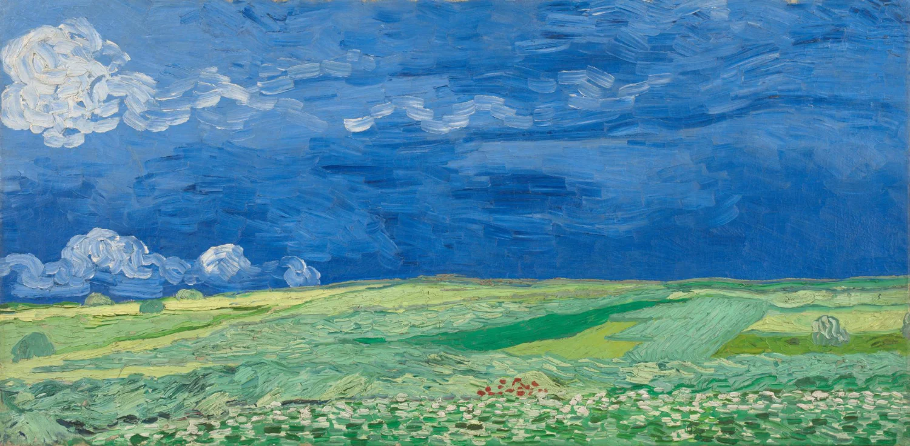
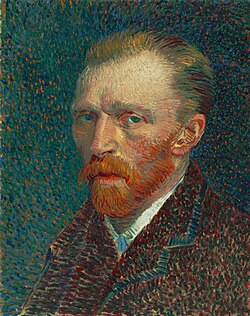

 |
|||
| Home | Galeri | Produk | Kontak |
 |
Vincent Willem van Gogh adalah seorang pelukis pascaimpresionis asal Belanda yang lahir pada 30 Maret 1853 di Zundert, Belanda, dan meninggal pada 29 Juli 1890 di Auvers-sur-Oise, Prancis. Ia dikenal sebagai salah satu seniman paling berpengaruh dalam sejarah seni rupa Barat. Meskipun selama hidupnya ia tidak mendapatkan pengakuan yang luas, karya-karyanya kini menjadi bagian penting dari perkembangan seni modern dan dikagumi oleh jutaan orang di seluruh dunia. Van Gogh mulai menekuni dunia seni secara serius ketika usianya sudah memasuki usia dewasa. Sebelum menjadi pelukis, ia pernah bekerja sebagai pedagang karya seni dan mencoba beberapa pekerjaan lainnya. Perjalanan hidupnya tidak selalu mudah. Ia mengalami berbagai kesulitan dalam kehidupan pribadi, kondisi keuangan, dan kesehatan mentalnya. Namun, di tengah berbagai tantangan tersebut, ia terus menghasilkan karya yang mencerminkan perasaan, pemikiran, serta pandangannya terhadap dunia di sekitarnya. Selama kurang lebih sepuluh tahun berkarya, Van Gogh menghasilkan sekitar 2.100 karya seni, termasuk sekitar 860 lukisan cat minyak. Karya-karyanya mencakup potret diri, pemandangan alam, bunga, kehidupan masyarakat, dan berbagai objek sederhana yang ditemuinya sehari-hari. Ia memiliki gaya melukis yang sangat khas, ditandai dengan penggunaan warna-warna cerah, kontras yang kuat, serta goresan kuas yang tebal dan ekspresif. Melalui gaya tersebut, Van Gogh tidak hanya berusaha menggambarkan bentuk objek secara realistis, tetapi juga menyampaikan emosi dan suasana yang dirasakannya. Salah satu karya Van Gogh yang paling terkenal adalah The Starry Night atau Malam Berbintang, yang dilukis pada tahun 1889. Lukisan ini menampilkan langit malam dengan pusaran cahaya, bintang-bintang yang terang, dan sebuah desa yang tenang. Karya tersebut menjadi contoh bagaimana Van Gogh menggunakan warna dan gerakan garis untuk menciptakan suasana yang hidup serta menggugah perasaan. Selain itu, ia juga dikenal melalui karya Sunflowers, rangkaian lukisan bunga matahari yang memperlihatkan kemampuannya dalam memadukan warna kuning dengan berbagai nuansa lainnya. Karya terkenal lainnya adalah The Bedroom, Irises, dan berbagai lukisan potret diri yang memperlihatkan perubahan gaya serta kondisi kehidupannya dari waktu ke waktu. Van Gogh sering melukis objek yang tampak sederhana, seperti bunga, kursi, ladang gandum, dan kamar tidurnya sendiri. Baginya, objek sehari-hari dapat menjadi sumber inspirasi yang kuat untuk mengekspresikan keindahan, kesepian, harapan, dan berbagai perasaan manusia. |
||
| Van Gogh’s Masterpieces | |||
| gambar | gambar | gambar | gambar |